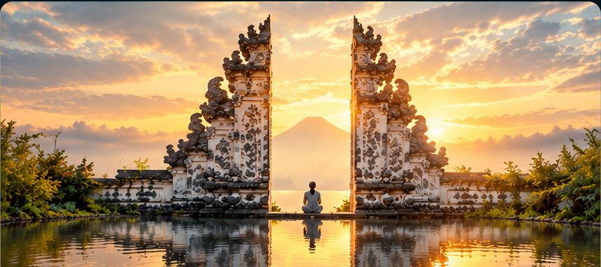
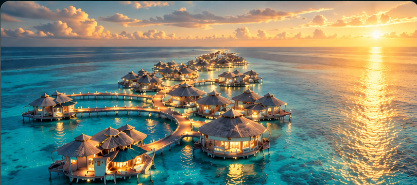

From the green heart of Bali to the turquoise lagoons of the Maldives — discover the places, flavours, adventures and stays that make every journey unforgettable.
Request your custom programme ↗

360° film by AirPano · Drag inside the video to look around · Open video ↗